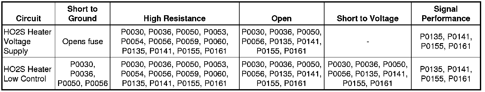

P0155
DTC P0050, P0056, P0059, P0060, P0155, or P0161
Diagnostic Instructions
* Perform the Diagnostic System Check - Vehicle (Initial Inspection and Diagnostic Overview) prior to using this diagnostic procedure.
* Review Strategy Based Diagnosis (Initial Inspection and Diagnostic Overview) for an overview of the diagnostic approach.
* Diagnostic Procedure Instructions (Initial Inspection and Diagnostic Overview) provides an overview of each diagnostic category.
DTC Descriptors
DTC P0050
- HO2S Heater Control Circuit Bank 2 Sensor 1
DTC P0056
- HO2S Heater Control Circuit Bank 2 Sensor 2
DTC P0059
- HO2S Heater Resistance Bank 2 Sensor 1
DTC P0060
- HO2S Heater Resistance Bank 2 Sensor 2
DTC P0155
- HO2S Heater Performance Bank 2 Sensor 1
DTC P0161
- HO2S Heater Performance Bank 2 Sensor 2
Diagnostic Fault Information

Typical Scan Tool Data

Circuit/System Description
Heated oxygen sensors (HO2S) are used for fuel control and post catalyst monitoring. Each HO2S compares the oxygen content of the surrounding air with the oxygen content in the exhaust stream. The HO2S must reach operating temperature to provide an accurate voltage signal. A heating element inside the HO2S minimizes the time required for the sensor to reach operating temperature. Voltage is provided to the heater by an ignition voltage circuit through a fuse. With the engine running, ground is provided to the heater by the HO2S heater low control circuit, through a low side driver within the engine control module (ECM). The ECM uses pulse width modulation (PWM) to control the HO2S heater operation to maintain a specific HO2S operating temperature range.
Conditions for Running the DTC
P0050 or P0056
* The Ignition 1 Signal parameter is between 10-18 volts.
* The engine speed is more than 400 RPM.
* The ignition switch is in the Crank or Run position.
* DTC P0030 and P0036 runs continuously when the above conditions are met for one second.
P0059 or P0060
* DTCs P0112, P0113, P0117, P0118, and P2610 are not set.
* The engine is started.
* The ignition is OFF for more than 8 hours.
* The Engine Coolant Temperature (ECT) Sensor parameter is between -30 and +45°C (-22 and +113°F) at engine start-up.
* The ECT Sensor parameter minus the Intake Air Temperature (IAT) Sensor parameter is less than 8°C (14°F) at engine start-up.
* The ignition voltage is less than 18 volts.
* DTCs P0053 and P0054 run once per drive cycle when the above conditions are met.
P0155
* DTCs P0068, P0101, P0102, P0103, P0106, P0107, P0108, P0112, P0113, P0116, P0117, P0118, P0120, P0121, P0122, P0123, P0125, P0128, P0201, P0202, P0203, P0204, P0220, P0222, P0223, P0442, P0443, P0446, P0449, P0455, P0496, P1101, P1516, P2101, P2119, P2135, P2176 are not set.
* The ECT Sensor parameter is more than 60°C (140°F).
* The Ignition 1 Signal parameter is between 10-18 volts.
* The MAF Sensor parameter is between 5-45 g/s.
* The Engine Run Time parameter is more than 180 seconds.
* The Engine Speed parameter is between 500-3,000 RPM.
* DTC P0141 runs the heater current test twice per drive cycle when the above conditions are met for 2 seconds.
P0161
* DTCs P0068, P0101, P0102, P0103, P0106, P0107, P0108, P0112, P0113, P0116, P0117, P0118, P0120, P0121, P0122, P0123, P0125, P0128, P0201, P0202, P0203, P0204, P0220, P0222, P0223, P0442, P0443, P0446, P0449, P0455, P0496, P1101, P1516, P2101, P2119, P2135, P2176 are not set.
* The ECT Sensor parameter is more than 60°C (140°F).
* The Ignition 1 Signal parameter is between 10-18 volts.
* The MAF Sensor parameter is between 5-45 g/s.
* The Engine Run Time parameter is more than 180 seconds.
* The Engine Speed parameter is between 500-3,000 RPM.
* DTC P0141 runs the heater current test twice per drive cycle when the above conditions are met for 2 seconds, with a 120-second delay between each test.
Conditions for Setting the DTC
P0050 or P0056
* The ECM detects that the affected HO2S heater low control circuit is not within a specified range.
* DTCs P0030 and P0036 set when the above condition is met.
P0059 or P0060
* The ECM detects that the affected HO2S heater low control circuit is not within a specified range at engine start-up.
* DTCs P0053 and P0054 set within one second when the above condition is met.
P0155
* The ECM detects that the HO2S 2 heater current parameter is more than 3.125 amps or less than 0.25 amp.
* DTC P0155 runs the heater current test twice per drive cycle when the above conditions are met for 2 seconds, with a 120-second delay between each test.
P0161 Heater Current Test
* The ECM detects that the HO2S 2 heater current parameter is more than 3.125 amps or less than 0.25 amp.
* These DTCs set within 2 seconds during the heater current test when the above condition is met. Two tests run per trip.
Action Taken When the DTC Sets
DTCs P0050, P0056, P0059, P0060, P0155, and P0161 are Type B DTCs.
Conditions for Clearing the DTC
DTCs P0050, P0056, P0059, P0060, P0155, and P0161 are Type B DTCs.
Reference Information
Schematic Reference
* Engine Controls Schematics (Electrical Diagrams)
* Power Distribution Schematics (Power Distribution Diagrams)
Connector End View Reference
Component Connector End Views (Connector Views)
Description and Operation
Engine Control Module Description (Engine Control Module Description)
Electrical Information Reference
* Circuit Testing (Component Tests and General Diagnostics)
* Connector Repairs (Component Tests and General Diagnostics)
* Testing for Intermittent Conditions and Poor Connections (Component Tests and General Diagnostics)
* Wiring Repairs (Component Tests and General Diagnostics)
* Heated Oxygen Sensor Wiring Repairs (Component Tests and General Diagnostics)
DTC Type Reference
Control Module References (Programming and Relearning) for scan tool information
Scan Tool Reference
Control Module References (Programming and Relearning)
Circuit/System Verification
1. Allow the engine to reach operating temperature. With the engine running, observe the HO2S Heater parameter with a scan tool. The value should vary from below 2 amp to above 1 amp.
2. With the engine running at operating temperature, observe the HO2S Heater parameter with a scan tool and manipulate the related wiring and connectors.
• If manipulation does affect the parameter then repair the harness or connector.
3. Engine running, observe the DTC information with a scan tool. DTCs P0050, P0056, P0059, P0060, P0155 or P0161 should not set.
4. Operate the vehicle within the Conditions for Running the DTC. You may also operate the vehicle within the conditions that you observed from the Freeze Frame/Failure Records data.
Circuit/System Testing
Important: You must perform the Circuit/System Verification before proceeding with Circuit/System Testing.
1. Ignition OFF, disconnect the harness connector at the appropriate HO2S.
2. Ignition ON, verify that a test lamp illuminates between the appropriate HO2S heater voltage supply circuit terminal D and ground.
• If the test lamp does not illuminate, test the HO2S heater voltage supply circuit for a short to ground or an open/high resistance. If the circuit tests normal and the HO2S heater voltage supply circuit fuse is open, test all components connected to the fuse and replace as necessary.
3. Ignition ON, verify that a test lamp does not illuminate between the appropriate HO2S heater voltage supply circuit terminal D and the appropriate HO2S heater low control circuit terminal listed below:
* B1S1 terminal E
* B1S2 terminal C
* B2S1 terminal E
* B2S2 terminal C
• If the lamp illuminates, test the HO2S heater low control circuit for a short to ground. If the circuit tests normal, replace the ECM.
4. Engine running, leave the test lamp connected from the previous step. The lamp should flash or be ON steady.
• If the test lamp is not on steady or flashing, test the HO2S heater low control circuit for a short to voltage or an open/high resistance. If the circuit tests normal, replace the ECM.
Important:
* The output driver should detect a short to voltage and turn OFF. If a resistance fault is present the driver will remain ON and the scan tool will display more than 0.0 amp. Less than 10 ohms of resistance may set a DTC.
* Performing this test may set additional DTCs.
5. Ignition OFF, install a 30A fused jumper wire between the appropriate HO2S heater voltage supply circuit terminal D and the appropriate HO2S heater low control circuit terminal listed below:
* B1S1 terminal E
* B1S2 terminal C
* B2S1 terminal E
* B2S2 terminal C
6. Engine running, verify the appropriate scan tool Heater parameter is less than 0.1 amp.
• If more than the specified range, test the HO2S heater voltage supply and HO2S heater low control circuits for more than 1 ohm of resistance. If the circuits test normal, replace the ECM.
7. If the ECM and all circuits test normal, replace the appropriate HO2S.
Repair Instructions
Notice: Refer to Heated Oxygen Sensor Resistance Learn Reset Notice (Heated Oxygen Sensor Resistance Learn Reset Notice) .
Perform the Diagnostic Repair Verification (Verification Tests) after completing the diagnostic procedure.
* Heated Oxygen Sensor Replacement - Bank 1 Sensor 1 (Service and Repair)
* Heated Oxygen Sensor Replacement - Bank 1 Sensor 2 (Service and Repair)
* Heated Oxygen Sensor Replacement - Bank 2 Sensor 1 (Service and Repair)
* Heated Oxygen Sensor Replacement - Bank 2 Sensor 2 (Service and Repair)
* Control Module References (Programming and Relearning) for ECM replacement, setup, and programming